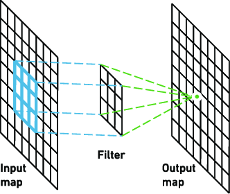
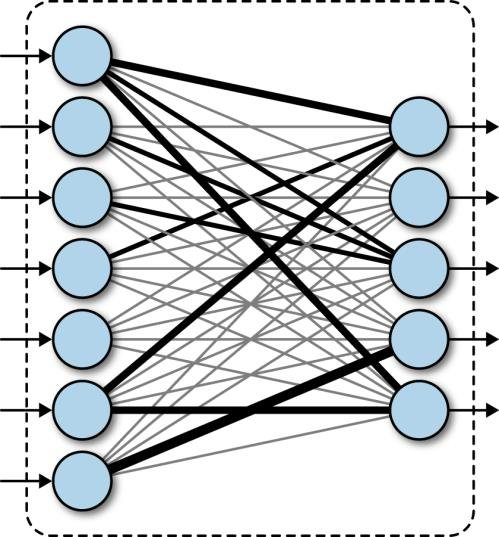

Types of CNN Layers
Let’s take an example by running a covnets on of image of dimension 32 x 32 x 3.
- Input Layer: This layer holds the raw input of image with width 32, height 32 and depth 3.
- Convolution Layer: This layer computes the output volume by computing dot product between all filters and image patch. Suppose we use total 12 filters for this layer we’ll get output volume of dimension 32 x 32 x 12. 
- Activation Function Layer: This layer will apply element wise activation function to the output of convolution layer. Some common activation functions are RELU: max(0, x), Sigmoid: 1/(1+e^-x), Tanh, Leaky RELU, etc. The volume remains unchanged hence output volume will have dimension 32 x 32 x 12.
-
Pool Layer: This layer is periodically inserted in the covnets and its main function is to reduce the size of volume which makes the computation fast reduces memory
and also prevents from overfitting. Two common types of pooling layers are max pooling and average pooling.
If we use a max pool with 2 x 2 filters and stride 2, the resultant volume will be of dimension 16x16x12.

- Fully Connected Layer: This layer is regular neural network layer which takes input from the previous layer and computes the class scores and outputs the 1-D array of size equal to the number of classes. 
The final Convolutional Neural Network is made up of a combination of these layers,
For better understanding of CNNs and the Math behind it along eith the code, check out the jupyter notebook here.